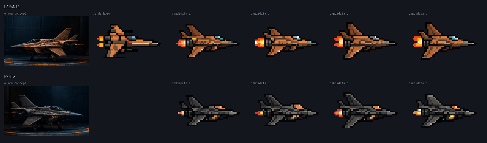
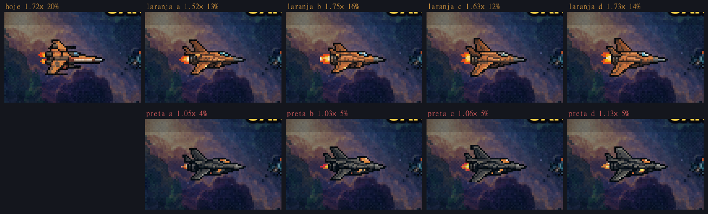
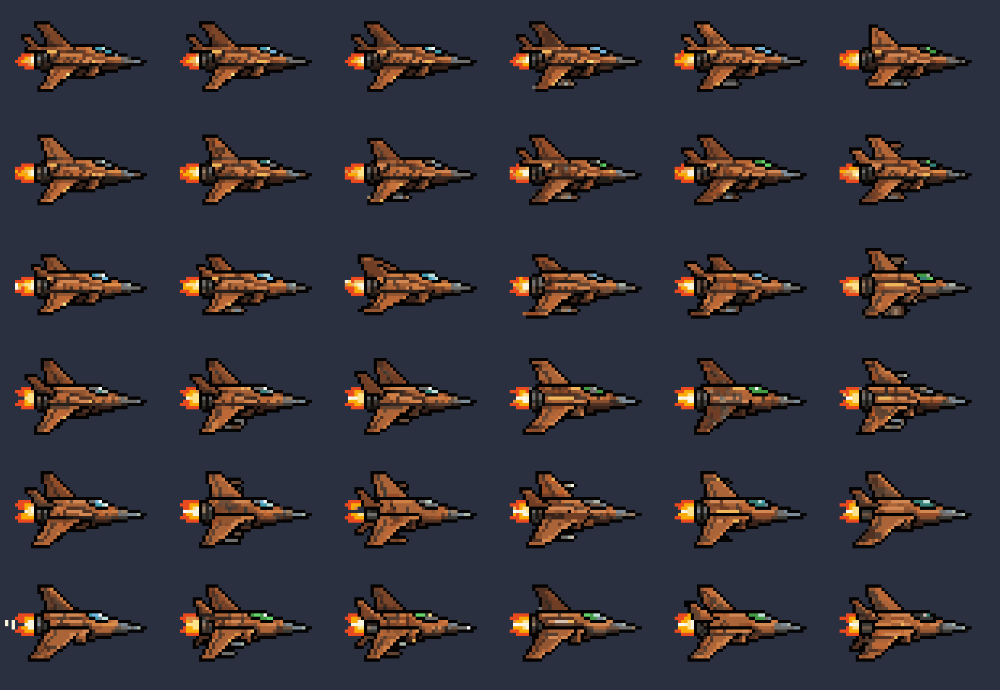
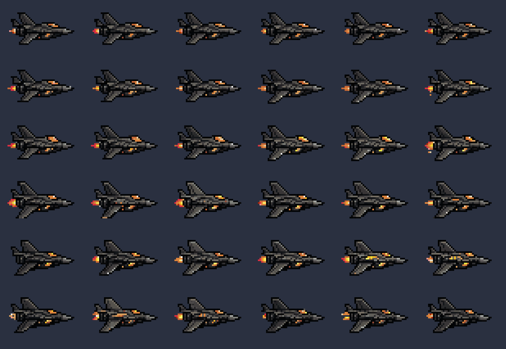

Os seus concepts, no PixelLab
23/10/2026 · ← a T0 menor e a T3 fora · Você perguntou: "veja se você acha interessante esses concepts que eu fiz. Será que conseguiríamos recriar no pixellab?" Teste de 20 gerações; nada instalado.
Sim, e funcionou de primeira. As 72 candidatas saíram de perfil, com o nariz para a direita, e todas são reconhecíveis como o seu caça: o nariz de agulha com ponta de aço, a cabine-bolha, a asa varrida, as duas aletas e o bocal do motor. O trem de pouso recolhido, como em voo.
Por que o concept é bom para o jogo: é da mesma família de caça da T0 e da T2 de hoje, então não briga com o que você já aprovou; a silhueta é uma flecha clara; e as duas pinturas são exatamente a laranja original e a preta extra que você decidiu.

No jogo

- A laranja lê como a T2 de hoje (1,5× a 1,75×, a de hoje 1,7×).
- A preta fica escura demais: 1,03× a 1,13× na F3; quem segura a leitura é o contorno e o âmbar. O PixelLab pintou um grafite mais fechado que o da família A. Se ela seguir, dá para clarear um ou dois tons do casco sem mexer no desenho.
Como saiu
/generate-image-v2(o Pro), a receita das elites da F3: o recorte do seu concept como assunto (prende a forma, aqui era o que se queria) e a T2 de hoje como estilo (paleta, contorno e densidade de detalhe), num quadro de 48×32 (scripts/_naves/_gerar-conceito.mjs).- 36 candidatas por pintura, 10 gerações cada chamada, 20 no total. Só 3 das 72 tinham pixel solto e ficaram de fora.
- Os concepts e as candidatas estão em
naves/cru/conceito/.
O que falta para virar nave do jogo: o motor animado (8 quadros e a variante azul dos Propulsores), encaixar no quadro de 44×26 e decidir o lugar na escada.
As 72 candidatas


O que eu preciso de você
- Se esse é o caminho, e qual candidata: a, b, c ou d de cada pintura, ou outra das 72.
- Onde ela entra: no lugar da T2 de hoje (a T0 e a T1 ficam), ou como base da escada inteira (uma T0 e uma T1 tiradas dela, menores e com menos peças).